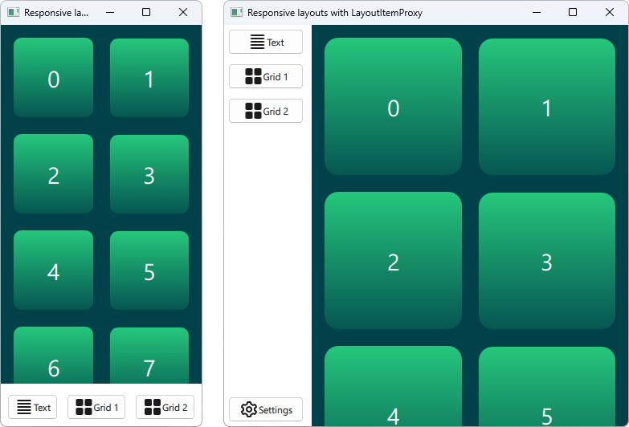

Qt Quick Layouts - Responsive Layout Example
Demonstrates how to use LayoutItemProxy to make a responsive UI.
This example shows how to use LayoutProxyItems in combination with layouts to create responsive layouts.
Running the Example
To run the example from Qt Creator, open the Welcome mode and select the example from Examples. For more information, visit Building and Running an Example.
Creating items
The LayoutItemProxy type allows to use the same item in different layouts, although only one layout can be visible at the same time. This can be used to create responsive layouts that adapt to the window or screen size.

First we need to define all items that should appear in or UI at some point. We use a AnnotatedRect, which is a simple Rectangle with some added text.
Rectangle { id: contentItem Layout.fillWidth: true implicitHeight: grid.implicitHeight implicitWidth: grid.implicitWidth color: "#00414A" GridLayout { anchors.fill: parent id: grid columns: 2 anchors.margins: 8 Repeater { model: 18 Rectangle { Layout.fillWidth: true Layout.margins: 8 implicitWidth: 200 implicitHeight: width radius: width / 10 gradient: Gradient { GradientStop { position: -0.2; color: "#2CDE85" } GradientStop { position: 1.2; color: "#00414A" } } Text { color: "#ffffff" font.pointSize: 22 anchors.centerIn: parent text: index } } } } } Button { id: a text: "Text" icon.source: "./icons/text.svg" Layout.fillWidth: true Layout.margins: 3 } Button { id: b text: "Grid 1" icon.source: "./icons/grid.svg" Layout.fillWidth: true Layout.margins: 3 } Button { id: c text: "Grid 2" icon.source: "./icons/grid.svg" Layout.fillWidth: true Layout.margins: 3 } Button { id: d text: "Settings" icon.source: "./icons/settings.svg" Layout.fillWidth: true Layout.margins: 3 }
Creating layouts
We can now declare various layouts using LayoutItemProxies, targeting the previously declare items. A single layout can be defined as follows.
ColumnLayout { id: smallLayout anchors.fill: parent Flickable { Layout.fillHeight: true Layout.fillWidth: true contentWidth: width contentHeight: gl.implicitHeight clip: true ScrollIndicator.vertical: ScrollIndicator { } LayoutItemProxy { id: gl width: parent.width height: implicitHeight target: contentItem } } RowLayout { Layout.fillHeight: false Layout.fillWidth: true Layout.margins: 5 LayoutItemProxy{ target: a; } LayoutItemProxy{ target: b; } LayoutItemProxy{ target: c; } } }
This snippet shows multiple ways to use the LayoutItemProxy. The simplest method is to add LayoutItemProxies to a Layout like the RowLayout here. In addition we set an additional Layout attached property to the LayoutProxyItem that will affect the target item only in this particular layout. Further, we see that the item d is not used in the first layout. Then it is automatically hidden by the LayoutItemProxy in the second layout. Another way of using it is shown by setting a LayoutItemProxy as the content of a Flickable.
Another layout is declared as follows.
RowLayout { id: largeLayout anchors.fill: parent ColumnLayout { Layout.minimumWidth: 100 Layout.margins: 2 LayoutItemProxy{ target: a } LayoutItemProxy{ target: b } LayoutItemProxy{ target: c } Item { Layout.fillHeight: true } LayoutItemProxy{ target: d } } LayoutItemProxy { Layout.fillHeight: true Layout.fillWidth: false target: contentItem } }
Here we show that LayoutItemProxies can be used together with real Items on the same hierarchy level. Generally, the LayoutItemProxy is flexible and allows nested structures of items and layouts.
Setting the layout
After two layouts, smallLayout and largeLayout are defined, we can continue with setting the layout that fits to the current size of the application. We define a new function for this code that we call when the window is initialized and whenever the width changes:
function setFittingLayout() { if (width < 450) { smallLayout.visible = true largeLayout.visible = false } else { smallLayout.visible = false largeLayout.visible = true } } onWidthChanged: setFittingLayout() Component.onCompleted: setFittingLayout()
Alternatively to calling this function after initialization we can hide all but the correct layout for the initial size in the declarative code.